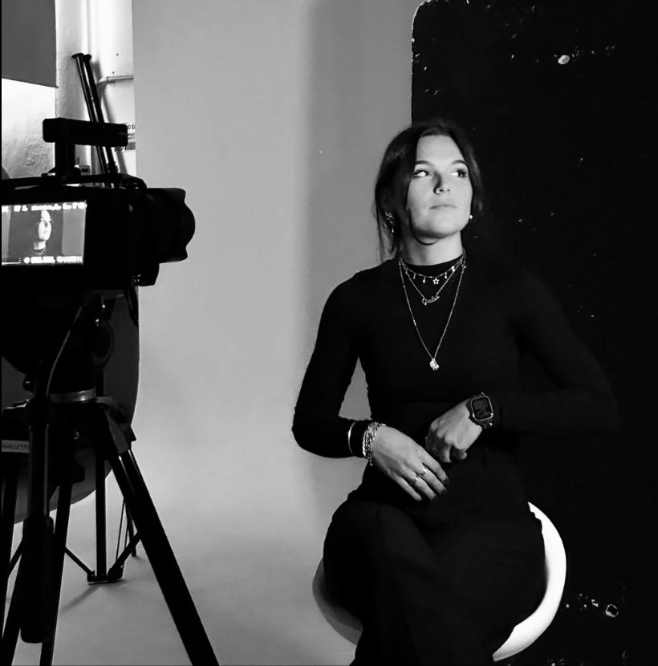

Sono Giulia Selmo, graphic & media designer. Lavoro al confine tra design di comunicazione, identità visiva e produzione audiovisiva — convinta che queste discipline parlino la stessa lingua quando le si lascia dialogare liberamente.
Il mio approccio parte sempre dalla ricerca: capire il contesto, il pubblico, l'essenza di ciò che si vuole comunicare. Solo dopo arriva la forma. Il risultato è un design che non decora ma significa.
Sono disponibile per progetti freelance, collaborazioni con studi e posizioni junior nel settore del design e della comunicazione visiva.
Contattami2026
Studio di Comunicazione indipendente nel settore del branding e della progettazione grafica e visiva.
2025
MOODART Scuola di Comunicazione per la Moda
Ufficio marketing — mansioni di Social Media Management e promozione eventi
2024 - 2026
Diploma di II Livello in Media Design & CG Animation
2018 — 2023
Liceo GG TRissino — Valdagno
Maturità in Scienze Umane-indirizzo Economico Sociale (LES)
Ogni progetto inizia con un periodo di immersione nel contesto: il brand, il settore, il pubblico. Non si progetta nel vuoto. Si progetta a partire da una comprensione profonda.
Prima di aprire qualunque software, serve un'idea forte che guidi tutte le scelte successive. Il concept è il filtro che separa le decisioni buone da quelle arbitrarie.
Un design bello che non funziona è decorazione. Un design che funziona ma non emoziona è anonimo. La sfida è sempre trovare il punto in cui questi due vettori si incontrano.
Iniziamo?